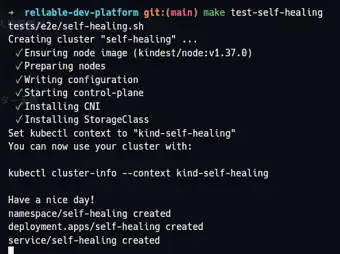

Platform Engineering / Platform QA
Reliable Development Platform
Developerが環境の復旧や正常性確認に過度な注意を払わず、 アプリケーション開発へ集中できる状態を目指す実験的プロジェクトです。 Platformが担う責務を定義し、 その能力を再現可能な条件で検証します。
環境維持の責務を、Developerの判断からPlatformへ。
R1 — Complete
Self-Healing Runtime
正常状態から単一実行インスタンスを失わせ、 Developerによる復旧目的の操作なしで、 期待実行数と代表的な利用操作が回復することをE2Eで検証します。
Reproducible Verification
検証環境の構築からE2Eを開始する。
make test-self-healing を入口として、
kindクラスタの作成、Kubernetes設定、Namespace / Deployment / Serviceの配置までを
自動化しています。
この画面は、障害注入へ進む前の検証環境が
再現されていく実行ログです。

make test-self-healing 実行時の環境構築ログ。クラスタを手作業で準備することを前提にしない。
Design Decisions
技術選択より先に、検証したい能力を決める。
Kubernetes標準reconciliationを使う
Pod喪失からのreplacementはDeployment / ReplicaSetが既に提供するため、R1ではcustom controllerを作らず既存機構をPlatform capabilityとして利用しました。
Pod nameではなくUIDで個体を識別
元の個体が本当に失われ、新しい個体へ置換されたことを明確に区別するためです。
RunningとAvailabilityを分離
実行個体数だけではなく、Service経由の代表操作成功も同一観測cycleで確認します。
Observed lossを計測起点にする
delete request受付時刻ではなく、対象UIDがRunningInstanceSetから外れた観測をAcceptance Thresholdの起点にします。
Development Approach
ProblemからVerificationまでを一つのIncrementで閉じる。
Roadmap
Capabilityを小さく積み上げる。
- R1 — Self-Healing Runtime Complete
- R2 — Healthy Routing Planned
- R3 — Safe Rolling Update Planned
- R4 — Platform E2E Planned
- R5 — CI Quality Gate Planned